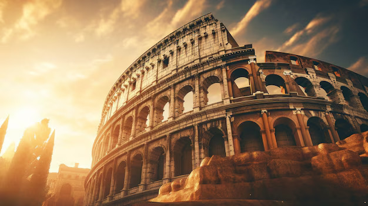
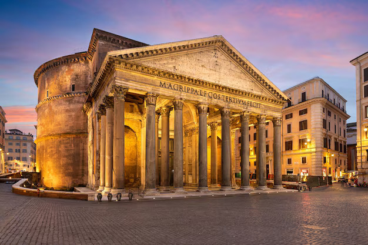
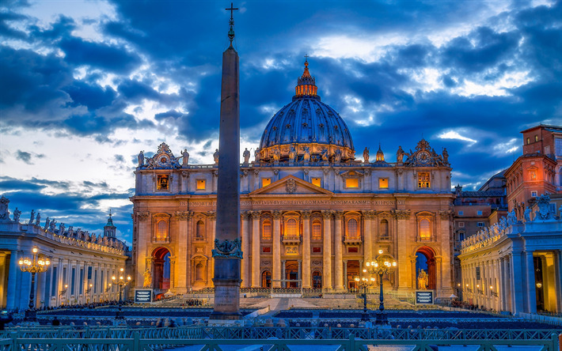
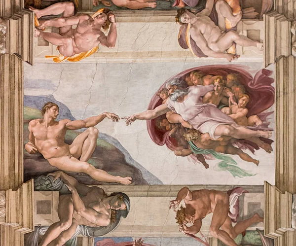

OS PONTOS DE INTERESSE ROMANOS

Coliseu

Fórum Romano

Panteão

Basílica de São Pedro

Capela Sistina
- La Pergola
- Roscioli
- Armando al Pantheon
- Da Enzo al 29
- Il Pagliaccio
- Coliseu
- Pantheon
- Fórum Romano
- Basílica de São Pedro
- Fontana di Trevi
- Trastevere
- Mercado de Campo de' Fiori
- Villa Borghese
- Piazza Navona
- Palatino
- Galleria Doria Pamphili
- Bairro Judeu
- Terme di Caracalla
- Ponte Sisto
- Janiculum Hill
| Mês | Melhor Época para Visitar | Notas |
|---|---|---|
| Janeiro | Baixa Temporada | Frio, mas menos turistas. |
| Fevereiro | Baixa Temporada | Bom para ver Carnaval. |
| Março | Baixa Temporada | Clima ameno, menos turistas. |
| Abril | Alta Temporada | Temperaturas agradáveis e flores. |
| Maio | Alta Temporada | Ótimo clima para passeios. |
| Junho | Alta Temporada | Início do calor e muitos turistas. |
| Julho | Alta Temporada | Calor intenso, mais turistas. |
| Agosto | Baixa Temporada | Calor extremo, muitos locais fechados. |
| Setembro | Alta Temporada | Clima agradável e eventos culturais. |
| Outubro | Alta Temporada | Clima ameno, menos turistas. |
| Novembro | Baixa Temporada | Clima fresco, bom para museus. |
| Dezembro | Baixa Temporada | Decorações de Natal, menos turistas. |